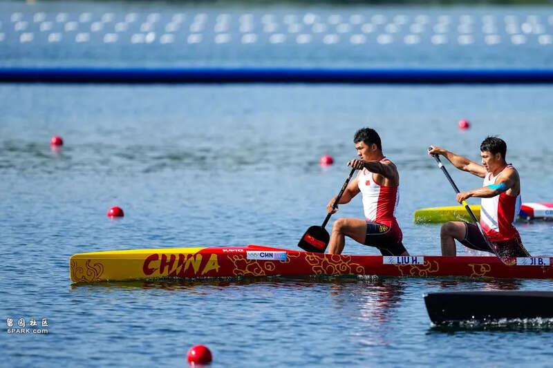
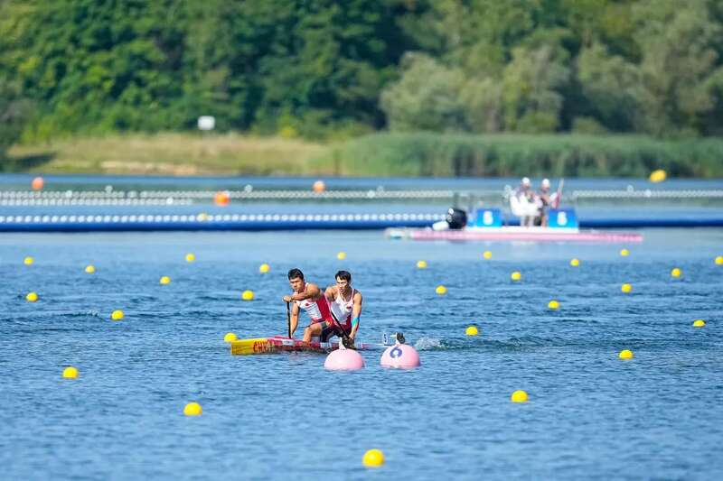
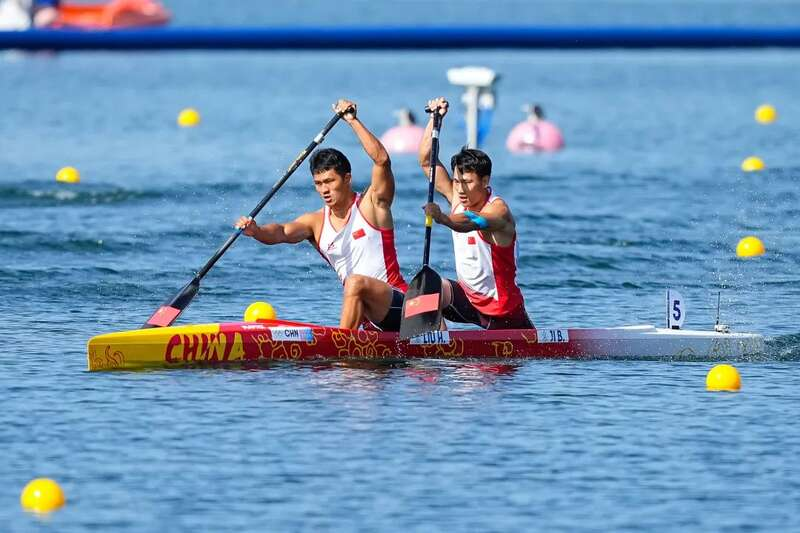
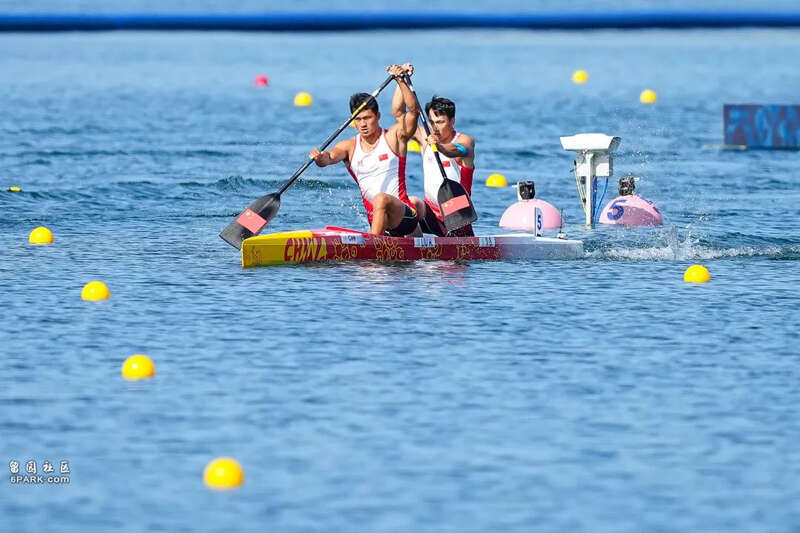
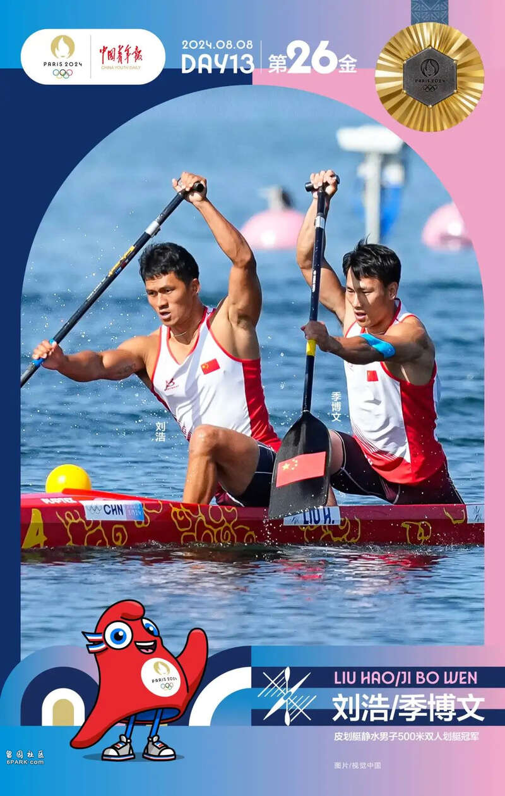

北京时间8月8日，巴黎奥运会皮划艇静水男子双人划艇500米决赛中，中国组合刘浩/季博文以1分39秒48的成绩获得冠军。

预赛就破了奥运会纪录
8月6日举行的皮划艇静水男子双人划艇500米预赛里，刘浩/季博文以1分37秒40的成绩，创造了该项目的奥运最好成绩，以小组第一晋级半决赛。
比赛中，个人中立组合以1分38秒65的成绩率先打破了由中国名将孟关良/杨文军在20年前创造的1分38秒96的奥运最好成绩。而排在第二小组的刘浩和季博文并未让这个新的纪录保持太久，他俩在前300米一直落后的情况下，奋起直追，最终以1分37秒40率先冲线，获得小组第一的同时再次刷新了奥运最好成绩。
8月7日，巴黎奥运会皮划艇静水项目进入第二个比赛日，中国选手刘浩、季博文又顺利晋级男子单人划艇1000米半决赛。当天的比赛中，两人延续了良好状态，东京奥运会亚军刘浩在预赛排名小组第二，直接晋级半决赛；首次参加奥运会的季博文则通过预赛和四分之一决赛两轮较量，挺进半决赛。
此番征战巴黎奥运会是刘浩的第二次奥运之旅，东京奥运会上，他与搭档郑鹏飞携手获得男子1000米双人划艇银牌，是中国皮划艇队时隔13年再获奥运奖牌；在男子1000米单人划艇中，刘浩还斩获亚军，这也是中国男子单人划艇的首枚奥运奖牌。本届奥运会，刘浩的搭档是首次出战奥运会的“00后”选手季博文，巴黎奥运会也将男子双人划艇项目的距离从1000米改为500米。

东京奥运会的银牌对于刘浩本人和中国皮划艇队而言是一次巨大的突破，但刘浩依然感到遗憾，2022年，刘浩与小自己9岁的季博文组成了新搭档，目标直指巴黎奥运会，谈到对季博文的第一印象，刘浩表示：“他年纪小，划得快。”季博文对于刘浩则由衷的钦佩，“浩哥是划艇届的老大哥，我们2019年在千岛湖比赛时候认识的，自己本来觉得自己已经很快了，但一比较被落得好远，我把浩哥当做一个榜样去学习，就朝着这个目标前进。”
刘浩和季博文良性竞争与合作
1000米调整成500米，对于擅长长距离的刘浩季博文来说，需要重新适应比赛节奏，冬训期间，他们进行了更多的力量训练，提升身体素质和体能，力量课上每项内容都在比拼，刘浩回忆：“没有感到特别难受，到了健身房，每个人都很兴奋，大家每天都在比，每个项目都要battle一下。”
季博文说得更加形象，“ 你加5公斤，我就加10公斤，你加10公斤，那我再加，训练计划可能100公斤，最后都奔140/150（公斤）去了，大家也互相鼓励，做不动的时候，都努力再拼一把。靠这个氛围，还有自己想变强的决心。这个冬天，力量提升了很多。”
这是一个非常好的良性竞争关系，作为老大哥的刘浩坦言自己有责任带动队伍的气氛，“我不可能让气氛冷下来，做力量一做就是两三个小时，如果情绪低落，不利于那么长时间的训练，也不利于提高，累是累的，但每天都在提高进步，每个人都很兴奋。”

因为配合时间不长，刘浩和季博文有一段时间都无法找到最佳的合力点，主教练雷文斌分析：“一条船上，两个人的力必须合在一个点上。划单人艇时，刘浩是右桨，季博文是左桨，两个人用力方式并不一样，技术特点不同，在配合上也会出现波动。”为了让两人尽快找到默契，教练团队在训练中加入了更多不同强度和桨频的训练。经验丰富的刘浩也一直在帮助季博文，他指出：“高频的加速没有问题，但你划有氧太紧了，我们的合力不稳定，时有时无，两个人的胯都得往前走，如果有一个人拖着点，我们这条艇就有点难了。”
伴随着艰苦的训练，两个人也在逐渐找到默契，2023年静水皮划艇世锦赛是奥运资格赛，前五获得巴黎奥运资格，当时对于搭档只有一年的刘浩和季博文来说是第一次真正严峻的考验，但比赛证实了两人的努力没有白费，中国组合仅次于德国获得第二名，同时锁定了巴黎奥运会的参赛席位。

刘浩赛后表示：“我是没想到有这个成绩，拿下资格，对我们接下来的训练提出了更高要求。”值得一提的是，每个奥运代表团在这个项目上只有一条艇参赛，刘浩和季博文深知肩上的担子很重。备战冲刺阶段，两人的状态进一步提升，出征奥运前夕，刘浩用四个“肯定”来表达冲击奥运最高领奖台的决心，“通过前期的表现、技术感觉和默契度，我们对巴黎奥运会是充满信心的，（之前的成绩）肯定了自己的训练，肯定自己的辛苦，肯定了自己的付出，（我们）肯定会在奥运会上有一份突破。”
当地时间8月8日，巴黎奥运会男子500米双人划艇决赛中，中国组合刘浩/季博文夺得冠军。

刘浩是东京奥运会“双银”得主，3年前，他与搭档郑鹏飞夺得男子1000米双人划艇银牌，后来又在男子1000米单人划艇中再夺银牌。因此，出征巴黎奥运会前，刘浩就期待能用一枚金牌来弥补遗憾。第十四届陕西全运会后，刘浩的搭档换成了“00”后小将季博文，而巴黎奥运会也将男子双人划艇项目从1000米改为500米。面对双重调整，30岁的刘浩积极应对，很快和年轻的搭档配合默契，完成突破。本届赛会，刘浩/季博文在预赛中就以1分37秒40的成绩晋级半决赛，还创造了该项目的奥运最好成绩，此后，他们又以小组第一从半决赛晋级。
最终，一路凯歌站上奥运最高领奖台。